SatView
Scripts em Python para baixar e plotar imagens dos satélites GOES-16 e GOES-19 sobre a América do Sul. Aberto, customizável e totalmente em português.
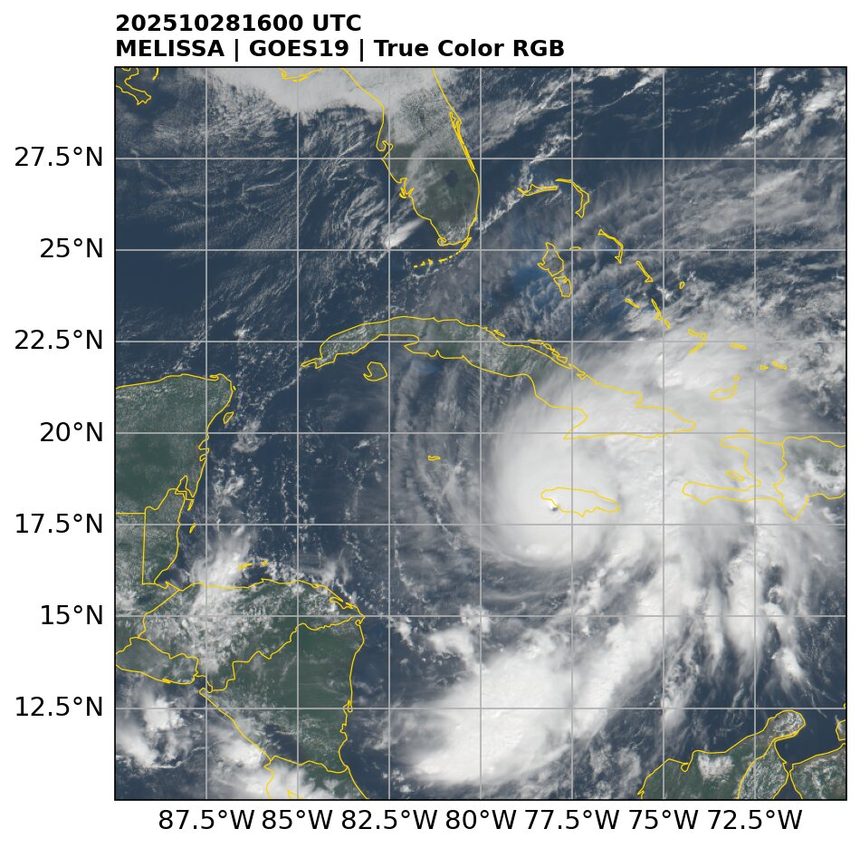
O que faz
Dois scripts: um baixa, outro plota. Sem configuração complicada.
Download automático
Baixa os dados direto do FTP do CPTEC/INPE para qualquer período (AAAAMMDDHH), cruzando meses e anos.
16 canais + 10 produtos
Canais individuais do ABI (ch01–ch16), 5 RGBs e 5 diferenças de canais usadas na análise operacional.
Plotagem pronta
Figuras com estados do Brasil, título padronizado e contornos com cor ajustada para cada produto.
Customizável
Escolha domínio (extent), título, paleta de cores e, nos RGBs, a legenda das cores dentro do mapa. Faixas e fórmulas seguem os guias oficiais (CIMSS, NASA SPoRT).
Produtos
Exemplos gerados com o sat_goes para o Furacão Melissa (GOES-19, 28/10/2025 16 UTC). Clique para ampliar.
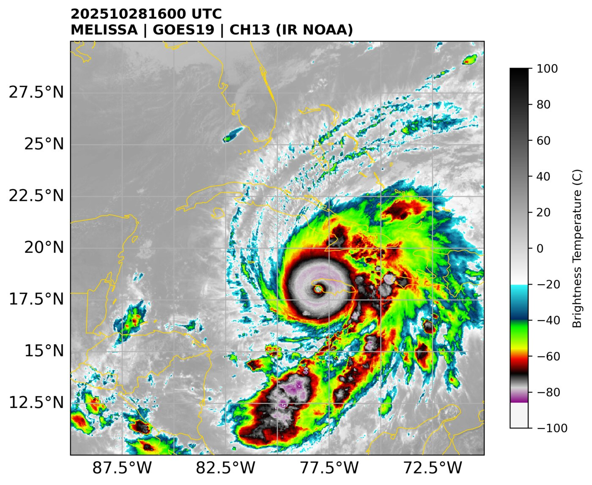
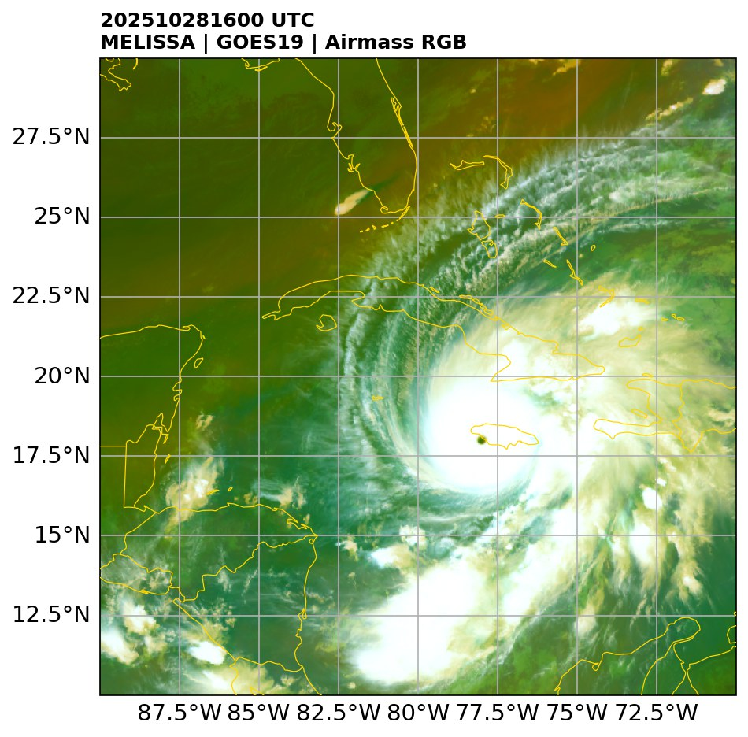
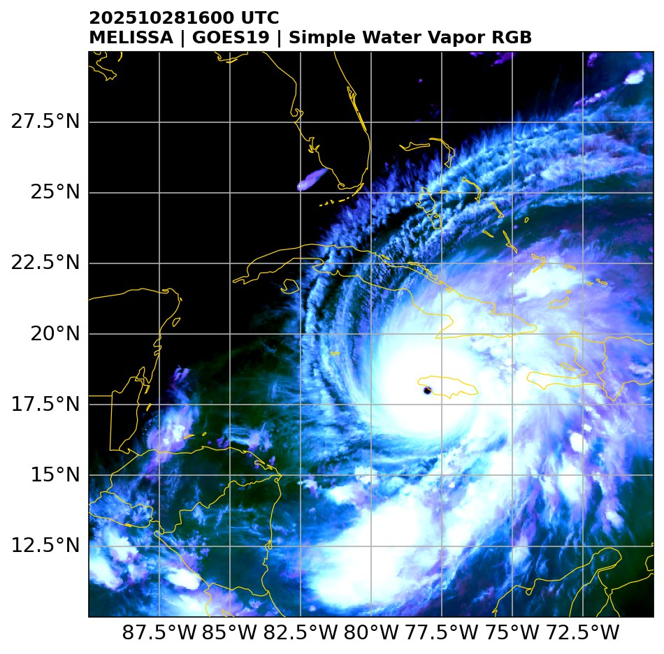
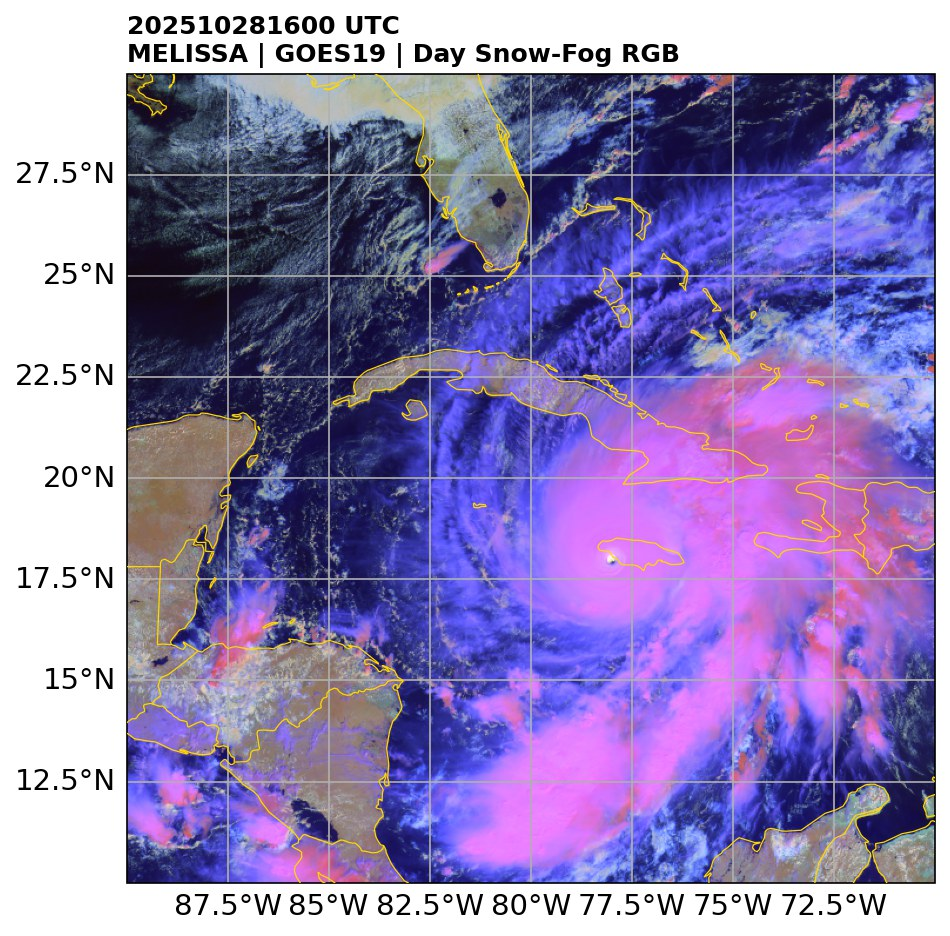
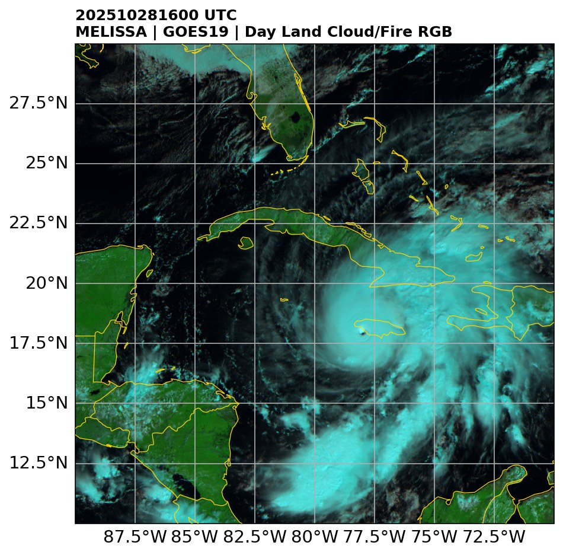
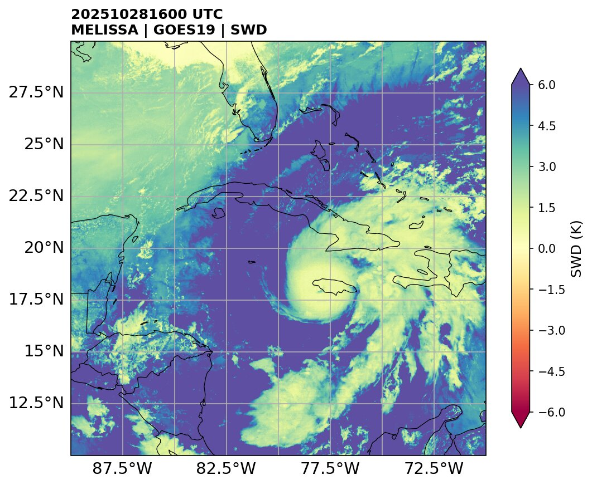
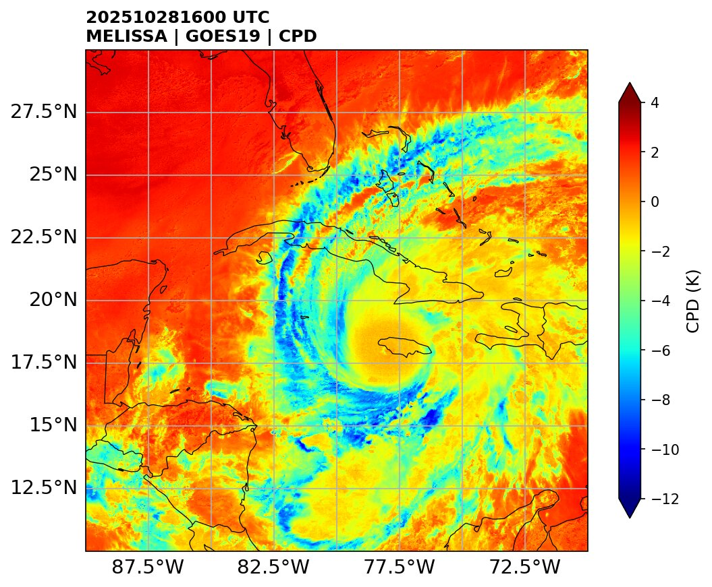
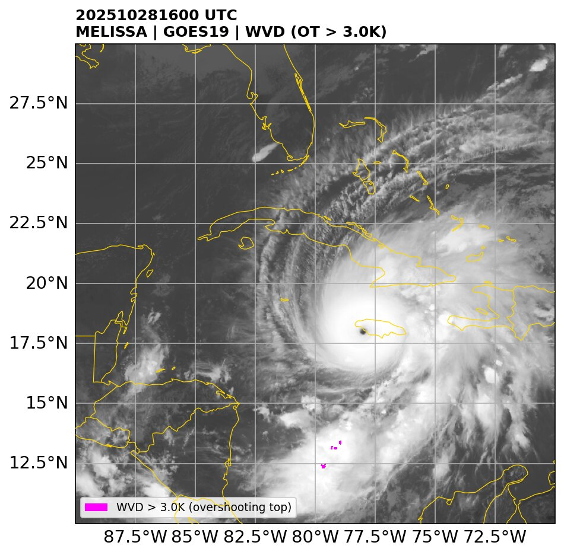
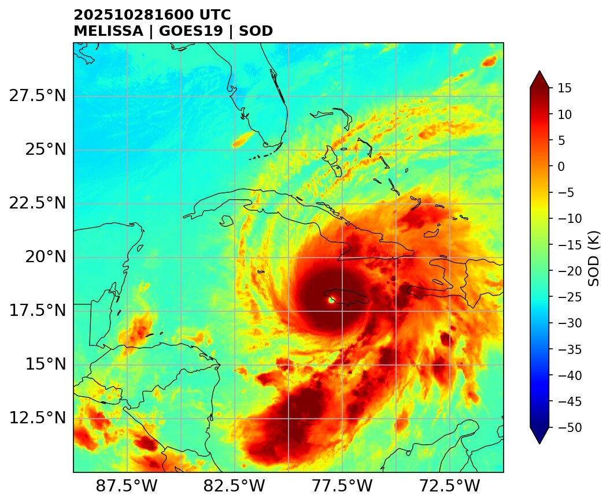
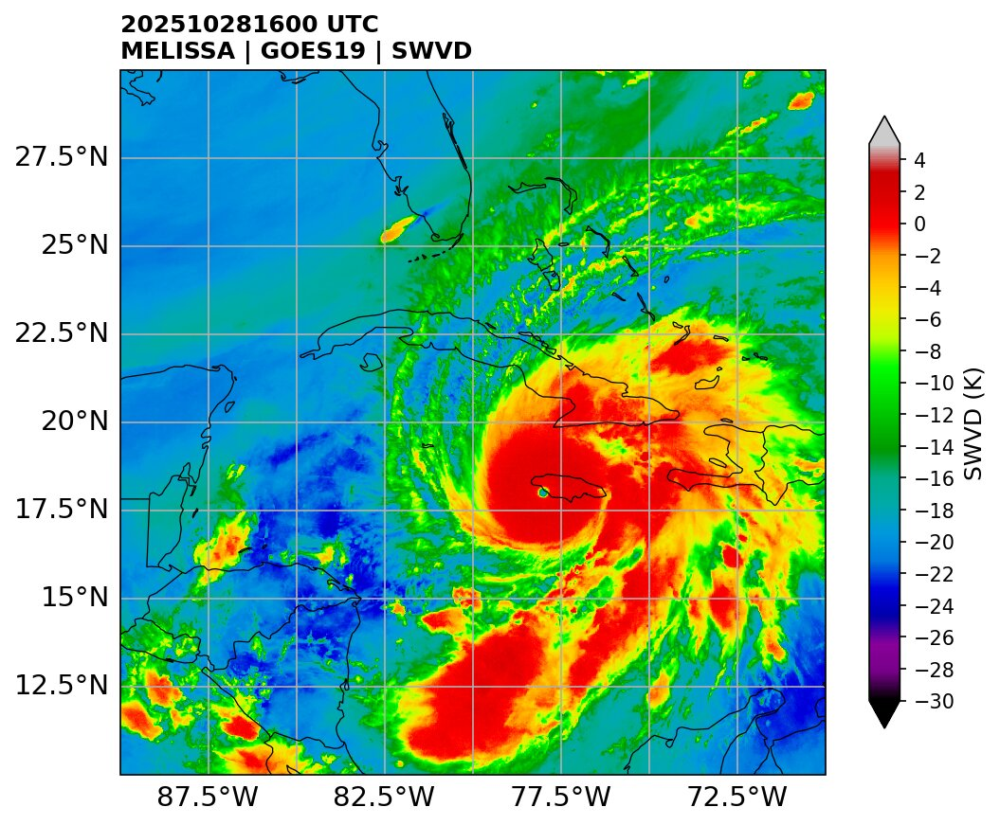
Como usar
Os scripts são interativos: perguntam satélite, produto e período no terminal.
Baixe os dados
Escolha o satélite (goes16 ou goes19), o produto e o período.
python 1.get_sat.pyPlote as imagens
O script detecta os produtos disponíveis no caso baixado e gera as figuras.
python 2.plot_sat.pyPróximos passos
- Canais individuais e 10 produtos para GOES-16 e GOES-19
- Legenda das cores dentro do mapa nos RGBs (opcional)
- Imagens no mesmo formato dos mapas do MONAN, usadas na avaliação do Forecast
- Acumulado de chuva IMERG e MERGE, com GIFs animados
- Full Disk GOES direto da AWS
- Novos satélites e sensores
- Integração com ERA5 e GFS